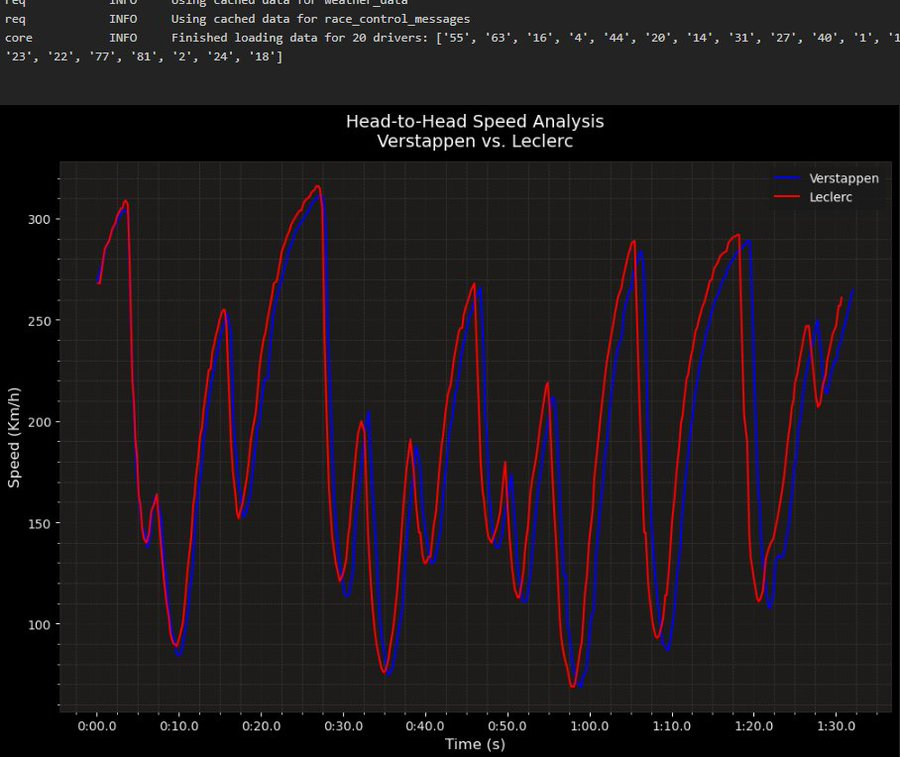
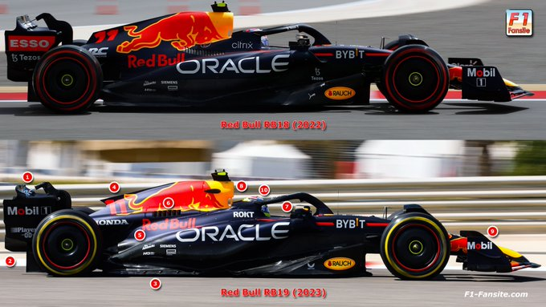
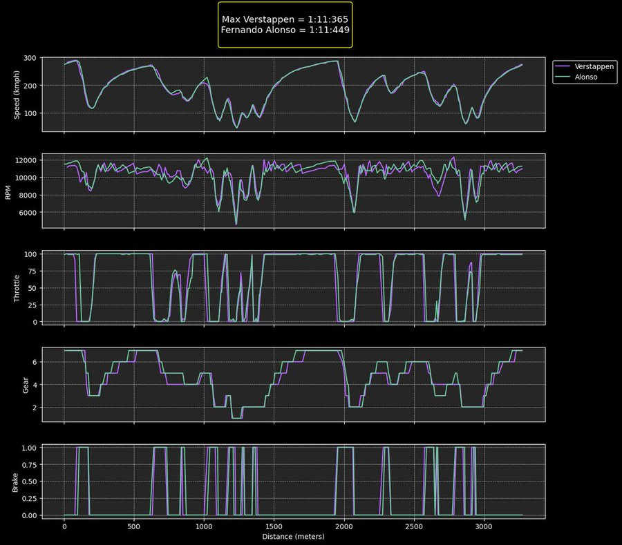

<!DOCTYPE html>
<html lang="en">
<head>
  <meta charset="UTF-8">
  <meta name="viewport" content="width=device-width, initial-scale=1.0">
  <title>F1 Data Analysis Blog</title>
  <style>
    body {
      margin: 0;
      padding: 0;
      font-family: 'Courier New', Courier, monospace; /* Change font to typewriter style */
      background-color: #000;
      color: #fff;
      font-size: 18px;
      line-height: 1.6;
    }
    #header {
      background-color: #111;
      padding: 20px;
      display: flex;
      justify-content: space-between;
      align-items: center;
      position: fixed;
      top: 0;
      left: 0;
      right: 0;
      z-index: 1000;
      box-shadow: 0 2px 4px rgba(0, 0, 0, 0.1);
      backdrop-filter: blur(5px); /* Add a blurred effect to the header */
    }
    #header h1 {
      margin: 0;
      font-size: 24px;
    }
    #header .title-container {
      display: flex;
      align-items: center;
    }
    #header img {
      height: 40px;
      width: auto;
      margin-right: 10px;
    }
    #posts {
      display: flex;
      flex-wrap: wrap;
      gap: 20px;
      justify-content: center;
      padding: 20px;
      margin-top: 80px;
    }
    .post {
      background-color: #333;
      padding: 20px;
      border-radius: 10px;
      cursor: pointer;
      box-shadow: 0 2px 4px rgba(0, 0, 0, 0.1);
      width: calc(33.33% - 20px);
      max-width: 300px;
      transition: transform 0.3s ease, background-color 0.3s ease;
      /* New styling for buttons */
      border: none;
      color: #fff;
      background: linear-gradient(135deg, #F2994A, #F2C94C); /* Gradient background */
      text-align: center;
      font-size: 16px;
      font-weight: bold;
    }
    .post:hover {
      transform: translateY(-5px);
      background: linear-gradient(135deg, #E74C3C, #3498DB); /* Adjusted hover color */
    }
    #separator {
      width: 100%;
      height: 1px;
      background-color: #fff;
      margin-top: 20px;
    }
    #content {
      padding: 20px;
      text-align: left;
      max-width: 800px;
      margin: 0 auto;
    }
    #intro {
      padding: 20px;
      margin-bottom: 20px;
      text-align: left;
      max-width: 800px;
      margin: 0 auto;
      background-color: rgba(255, 255, 255, 0.1); /* Add a translucent background to intro */
      border-radius: 10px;
      box-shadow: 0 2px 4px rgba(0, 0, 0, 0.1);
    }
    .line {
      width: 100%;
      height: 1px;
      background-color: #fff;
    }
    img {
      display: block;
      margin: 0 auto;
      width: 100%;
      max-width: 600px;
      height: auto;
    }
    video {
      display: block;
      margin: 20px auto;
      max-width: 100%;
      height: auto; /* Change height to auto */
      width: 90%; /* Set width to 90% */
    }
    #footer {
      background-color: #111;
      padding: 20px;
      text-align: center;
      box-shadow: 0 -2px 4px rgba(0, 0, 0, 0.1);
      margin-top: 20px;
    }
    #footer .follow-us {
      color: #fff;
      margin-bottom: 10px;
      font-size: 16px;
    }
    #footer .social-logos {
      display: flex;
      justify-content: center;
      gap: 20px;
      margin-top: 10px;
    }
    #footer .social-logos img {
      height: 40px;
      width: auto;
      transition: transform 0.3s ease;
    }
    #footer .social-logos img:hover {
      transform: scale(1.2);
    }

    @font-face {
      font-family: 'Courier New', Courier, monospace;
      src: url('cour.ttf') format('truetype'); /* Load typewriter style font */
      font-weight: normal;
      font-style: normal;
    }
  </style>
</head>
<body>
  <div id="app"></div>

  <script src="https://cdnjs.cloudflare.com/ajax/libs/angular.js/1.8.2/angular.min.js"></script>
  <script src="https://cdnjs.cloudflare.com/ajax/libs/react/17.0.2/umd/react.production.min.js"></script>
  <script src="https://cdnjs.cloudflare.com/ajax/libs/react-dom/17.0.2/umd/react-dom.production.min.js"></script>
  <script>
    document.addEventListener('DOMContentLoaded', function() {
      const header = document.createElement('div');
      header.id = 'header';
      
      const titleContainer = document.createElement('div');
      titleContainer.classList.add('title-container');

      const title = document.createElement('h1');
      title.textContent = 'F1 Data Analysis Blog';
      titleContainer.appendChild(title);

      const logo = document.createElement('img');
      logo.src = 'f1_logo.png';
      logo.alt = 'F1 Logo';
      logo.style.height = '40px';
      logo.style.width = 'auto';
      titleContainer.appendChild(logo);

      header.appendChild(titleContainer);

      const app = document.getElementById('app');
      app.appendChild(header);

      const postsContainer = document.createElement('div');
      postsContainer.id = 'posts';

      const posts = ["Red Bull Singapore GP Analysis", "Telemetry Data Comparison"];
      posts.forEach(post => {
        const postElement = document.createElement('div');
        postElement.classList.add('post');
        postElement.textContent = post;
        postElement.addEventListener('click', function() {
          handlePostClick(post);
        });
        postsContainer.appendChild(postElement);
      });

      app.appendChild(postsContainer);

      const separator = document.createElement('div');
      separator.id = 'separator'; // Fixed typo
      separator.classList.add('line');
      app.appendChild(separator);

      const intro = document.createElement('div');
      intro.id = 'intro';
      intro.innerHTML = `
        <p>Welcome to the F1 Data Analysis Blog!</p>
        <p>Here, we dive deep into the world of Formula 1, analyzing key moments and data from recent races.</p>
        <p>In this edition:</p>
        <ul>
          <li><strong>Red Bull Singapore GP Analysis:</strong> Graph highlights the challenges faced by the RB19 in tight corners. While Ferrari and Leclerc masterfully extract potential from the SF-23. Notably, Leclerc excels in extending top speeds, while Verstappen adopts a more cautious approach.</li>
          <li><strong>Telemetry Data Comparison:</strong> Compare the telemetry data of Max Verstappen and Fernando Alonso during the intense Monaco Grand Prix of 2023.</li>
        </ul>
        <p>Click on a post title above to read more.</p>
      `;
      app.appendChild(intro);

      const contentArea = document.createElement('div');
      contentArea.id = 'content';
      app.appendChild(contentArea);

      const footer = document.createElement('div');
      footer.id = 'footer';
      
      const line = document.createElement('div');
      line.classList.add('line');
      footer.appendChild(line);

      const followUs = document.createElement('p');
      followUs.classList.add('follow-us');
      followUs.textContent = 'Stay up to date with our analyses! Follow us on ⬇️';
      footer.appendChild(followUs);

      const socialLogos = document.createElement('div');
      socialLogos.classList.add('social-logos');

      const logos = ['redbull1.png'];
      logos.forEach(logo => {
        const logoImg = document.createElement('img');
        logoImg.src = logo;
        logoImg.alt = 'Social Logo';
        logoImg.addEventListener('click', function() {
          window.open('https://twitter.com/adarsh82_', '_blank');
        });
        if (logo === 'redbull1.png' || logo === 'merc.png') {
          logoImg.style.height = '60px';
        }
        socialLogos.appendChild(logoImg);
      });

      footer.appendChild(socialLogos);

      app.appendChild(footer);

      function handlePostClick(post) {
        let content = '';
        if (post === "Red Bull Singapore GP Analysis") {
          content = `
            <h2>Red Bull Singapore GP Analysis</h2>
            <p>Graph highlights the challenges faced by the RB19 in tight corners. While Ferrari and Leclerc masterfully extract potential from the SF-23. Notably, Leclerc excels in extending top speeds, while Verstappen adopts a more cautious approach.</p>
            
            <p>Despite Red Bull's overall dominance in the season, it is no doubt that they struggled in tight cornered street circuits, attributed to the RB19's lower ride height compared to others, struggled to find the right setup for Singapore.</p>
            
            <p>The track demanded more mechanical grip over high downforce, which is RB19's best asset, while red bull had the best aero package, it becomes somewhat irrelevant in this context. The Red Bull team managed well to scrape a P1 in qualis of Monaco albeit with a slim margin.</p>
            <p>But that approach was certainly not sustainable. However, Red Bull is actively trying to improve in this area for the upcoming season, as the rumors suggest the RB20 allegedly failed the FIA crash test. While this may appear negative out of context.</p>
            <p>This just indicates Red Bull trying to push the boundaries of innovation with RB20 trying to make a lighter better chassis to maximize the overall performance, especially for the street circuits.</p>
            
            <p>After a while after our blog was up, The chief designer Adrian Newey confirmed:</p>
            <p>Adrian Newey says he was 'never satisfied' with the RB19</p>
            <blockquote>"I've never been satisfied. We've had this fantastic season, broken barriers, records, or whatever. The reality is, there's things with the car that we feel can be improved."</blockquote>
            <p>Later before the start of the season, Verstappen too confirmed it:</p>
            <p>🚨 Max Verstappen expects the problems of last year's car (slow corners and street tracks) to disappear in the RB20</p>
            <p>Max: "If the balance of the car is what I feel right now, we're in a good spot."</p>
          `;
        } else if (post === "Telemetry Data Comparison") {
          content = `
            <h2>Telemetry Data Comparison, Verstappen vs Alonso (Monaco 2023)</h2>
            <p>Car telemetry data analysis with python 📊: Verstappen 🟣 vs Alonso 🟢 (Monaco Qualifying 2023)</p>
            
            <p>One of the most intense F1 qualis, Alonso's 1:11:449 and Verstappen's 1:11:365, with 7 other drivers within a second.</p>
            <p>Verstappen in the final qualifying lap, drove like a man possessed, FEARLESS w/ magical sector 3, every turn, every throttle & braking points, pure PERFECTION. 👹</p>
            <p>Ride onboard with Max Verstappen to relive the moment he took a monstrous Monaco pole ✨</p>
            <video controls width="400">
              <source src="ver.mp4" type="video/mp4">
              Your browser does not support the video tag.
            </video>
          `;
        }

        contentArea.innerHTML = content;
        intro.style.display = 'none';
      }
    });
  </script>
</body>
</html>
